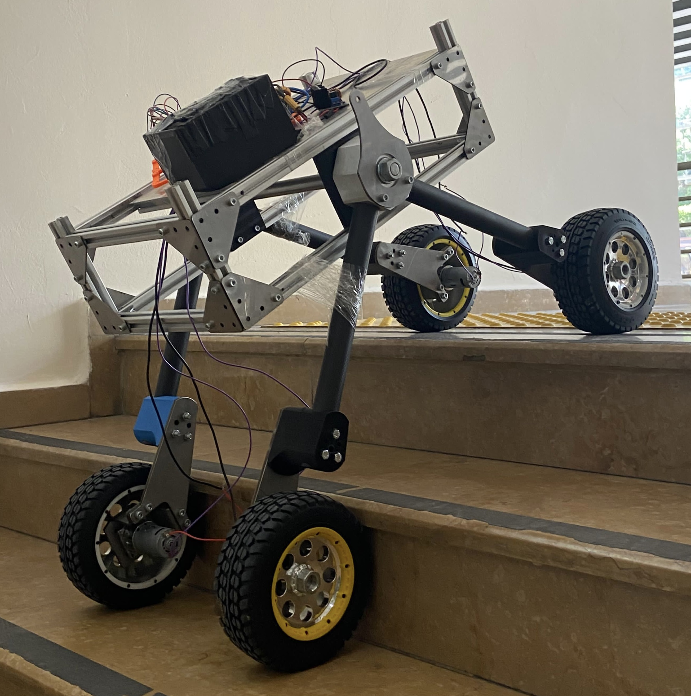
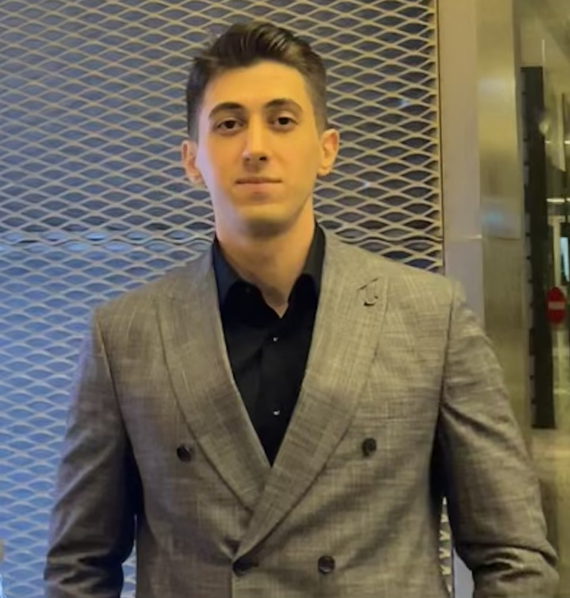

Autonomous Rover
Autonomous rover work from competitive robotics projects.

Jr. Machine Learning Engineer - Leader - Entrepreneur
Download CV"One awake enough to awaken all sleepers. Think different"
First and foremost, I am a leader and entrepreneur. I am also a computer engineer. Still ongoing, throughout my entire learning life, I have always been and continue to be intertwined with technology and its derivatives.
I thrive creating scalable engineering environments and processes with strong vision and solid fundamentals to enable businesses and fuel innovation.
AI Engineer at Hisar Hospital Intercontinental, Co-Founder & CTO of Ablacım.
I build clinical automation systems using FastAPI, OCR, Speech-to-Text, and RAG — as well as AI-powered product platforms.
Graduated 1st in class from Beykent University Computer Engineering. Former TÜBİTAK intern, Aikido black belt, and competitive robotics participant (TEKNOFEST, European Rover Challenge).
Writing occasionally. More soon.
Research in progress. Publications will appear here.
I read every message. Response time: a few days.
"The people who can change the world, are the ones who are crazy enough to believe it."
- Steven Paul Jobs

Autonomous rover work from competitive robotics projects.